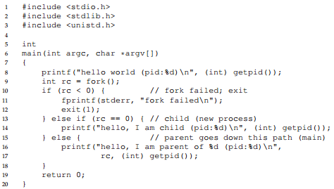
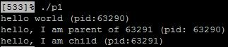

Interlude: Process API
Unix presents one of the most intriguing ways to create new processes with a pair of system calls: fork() and exec(). Another routine wait() is used by a process wishing to wait for a process it has created to complete.
The fork() System Call
- The fork() system call is used to create a new process.

- Consider the code above, the result of running this program is

- SO WHAT HAPPENED?
- When the program first started running, the process prints out a hello world message including it's process identifier or PID (i.e. 63290 in my program). The PID is used to name the process so you can do something with it (such as stop from running).
- fork() is then called, which is a system call the OS provides that allows you to create new processes. The thing is, the new process is almost an exact copy of the process that called it